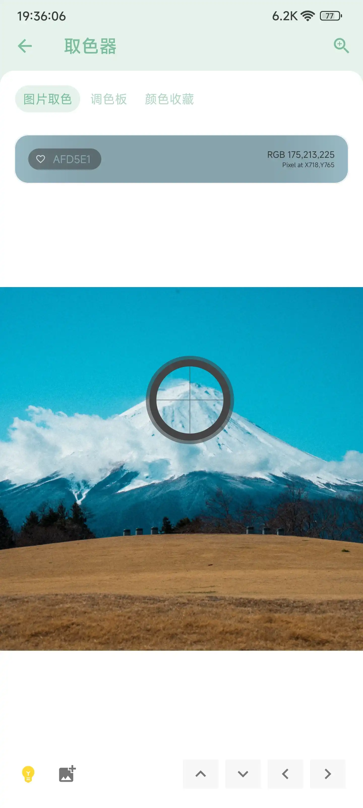
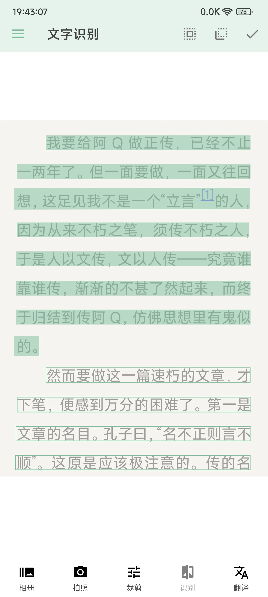

Cerulean 避坑指南：这几个翻车位我替你踩过了
Cerulean 看着简单，装完就能用，但有几个地方特别容易踩坑——长截图出空白、搜索找不到工具、应用冻结搞出问题，看完这篇至少省你半小时排查时间。
第一次在 Cerulean官网 看到它的时候我以为就是个"工具箱合集"，从 官方下载 拿了安装包装上就能爽用。结果前后踩了四五个坑，有的花了十分钟才想明白是怎么回事，有的差点把手机搞出毛病。这篇把我踩过的雷整理一下，你别再犯同样的错。
坑一：长网页截图出来全是空白占位框
症状：在 Cerulean 里用网页截图功能保存了一篇长文章，结果打开一看，正文里的图片位置全是灰框，文字倒是完整的，就是图没了。

原因：这不是 bug，是你没按正确顺序操作。网页上的图片大多是"懒加载"——浏览器滚到那个位置时才真正下载。Cerulean 的内置浏览器也遵循这个逻辑。你直接点截图，它只能截到已经加载完的内容，还没滚到的图片自然就是空白。
解法：打开网页后，先从头到尾完整滚动一遍，慢一点，确保所有图片都加载出来（看到图片真正显示出来再往下滚），滚到底部了再点右上角截图按钮。听起来麻烦，其实就是多花十几秒的事，养成习惯就好。
我后来发现一个判断标准：滚动时如果某个位置还在转圈加载，就别截，等它出来再说。
坑二：搜索框搜不到明明有的工具
症状：朋友说 Cerulean 里有个"亲戚计算器"挺好用，我打开搜"亲戚"，结果什么都没出来。翻分类翻了五分钟才找到，在一个我根本没注意的分组里。
原因：大概率有三种情况。第一，你可能是在手机的全局搜索里搜的，不是 Cerulean 应用自己的搜索框——它的内部工具清单只在应用内搜索可见。第二，关键词可能不对，这个工具可能叫"亲戚关系"而不是"亲戚"。第三，少数版本的工具清单有差异，你可能需要去设置里手动触发一次数据更新同步最新工具。
解法：先确认是在 Cerulean 应用顶部的搜索框里输入的，然后换几个关键词试试——搜功能描述也行，比如不知道具体叫什么但想"提取 B 站视频封面"，搜"封面"大概率能命中。如果还是不行，进设置 → 关于看一下版本，或者翻一下 Cerulean文档 里关于版本差异的说明。
我后来总结了一条经验：搜不到 = 换词 or 升级，别硬翻分类，效率太低。

坑三：应用冻结之后系统开始弹窗报错
症状：冻结了一个看起来没用的系统应用（好像叫"设备管理服务"之类的名字），结果第二天开始手机反复弹"某某服务已停止运行"的提示，关都关不掉。
原因：你冻了不该冻的东西。Cerulean 的应用冻结功能底层就是调安卓的禁用接口，但有些系统组件表面上看是"预装垃圾"，实际上是系统运行的依赖项。冻掉之后系统找不到它，就会不断报错。另外如果你没有 root 权限，普通应用的冻结还好，系统预装应用本来就冻不完全，强行操作容易出问题。
解法：记住几个绝对不能碰的类别：电话、短信、相机、系统设置、应用商店——这些是底线。对那些你拿不准名字的"系统服务"，宁可放着也别动。如果已经冻错了，进 Cerulean 的冻结列表把它解冻就行，数据不会丢，秒级恢复。
还有一点要注意：如果你用的是小米 MIUI 或华为 EMUI，这些系统本身就带应用冻结功能，别两边同时开，只用一个入口操作，避免状态冲突。
坑四：做个决定 —— 选项太多反而选不出来
症状：跟朋友聚餐用指尖轮盘决定吃什么，我一口气加了十五六个选项，结果轮盘转起来视觉上乱成一团，停下来指针指向的那个选项字还被挤没了，大家都看不清。
原因：轮盘这种可视化选择器有合理的选项数量上限。太多的话每个选项分到的扇区太窄，文字显示不全，仪式感也没了——本来是想图个"随缘"的乐趣，结果变成"这到底指的是谁"的集体困惑。
解法：选项控制在 6~8 个 最合适，文字尽量精简到关键词。比如"海底捞火锅"改成"火锅"，"麦当劳还是肯德基"改成"洋快餐"。数量精简之后轮盘看起来清爽，大家也都能一眼看清结果。
另外提醒一句：这个工具本质就是个随机数生成器，别用来做重大决策——投资、换工作这种事还是得自己想清楚。
坑五：图片处理完保存到手机相册找不到
症状：用 Cerulean 把几张图片拼成长图，点了保存，去相册找却没看到。以为没保存成功又操作了一遍，还是找不到。
原因：Cerulean 处理后的图片默认存到自己的专属目录，有些手机的系统相册不会自动扫描这个目录的新文件。你得去 Cerulean 的设置里看一下保存路径，或者用文件管理器手动找。部分厂商 ROM 的相册扫描策略比较保守，新文件可能要过几分钟才会被索引出来。
解法：处理完别急，等个一两分钟再刷新相册。如果还是没有，进 Cerulean 的"我的文件"或设置里的存储管理页面，那里应该能直接看到处理好的文件，长按可以选择"分享"或"移动到相册"。

防坑清单（速查版）
- 长截图先滚完再截，懒加载的图片不滚到不会出来
- 搜索只在 Cerulean 应用内搜，搜不到就换关键词或升级版本
- 应用冻结别碰系统关键组件，没 root 的话系统预装应用慎动
- 指尖轮盘选项控制在 6~8 个，太多了看不清
- 处理完的图找不到就等一两分钟或去 Cerulean 内部文件里找
说实话，踩完这些坑之后再用 Cerulean 就顺手多了。它的功能覆盖确实广，120 多个工具随便用，但就是这些小地方不留神容易翻车。知道了这些点，用起来其实相当省心。如果你想补充了解更多细节可以直接查 GitHub 上的完整归档，国内访问不太顺畅的话 Gitee 和 GitCode 也有同步的镜像。